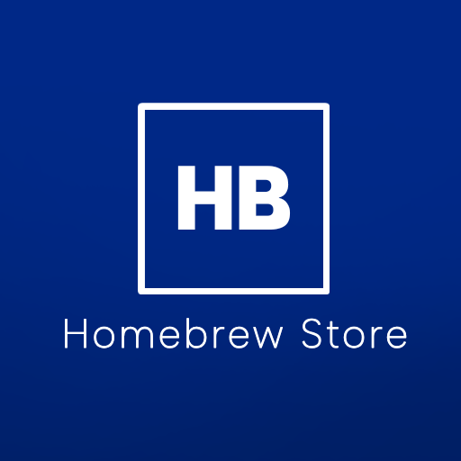
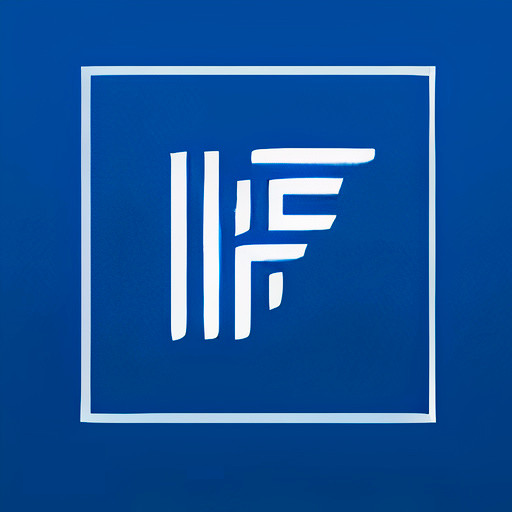
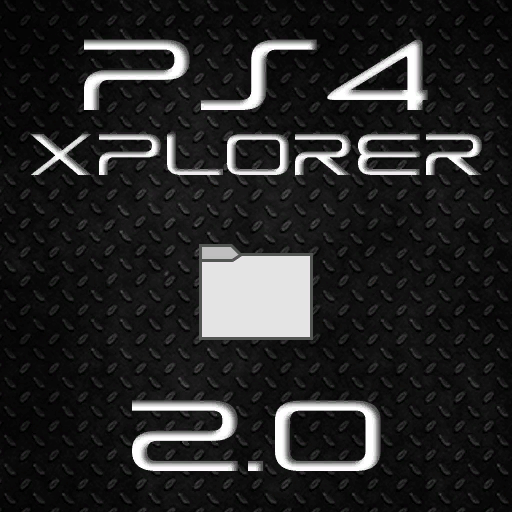
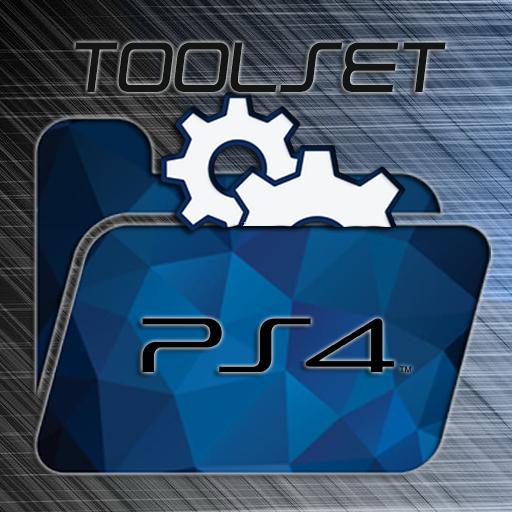
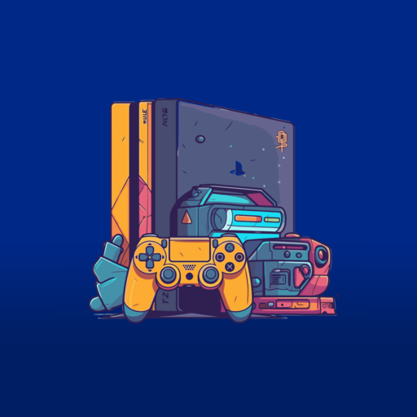
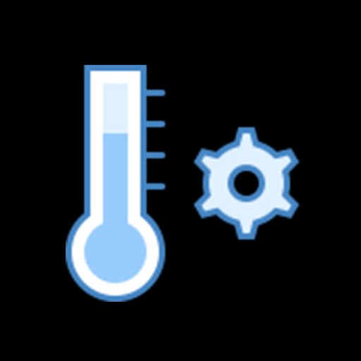
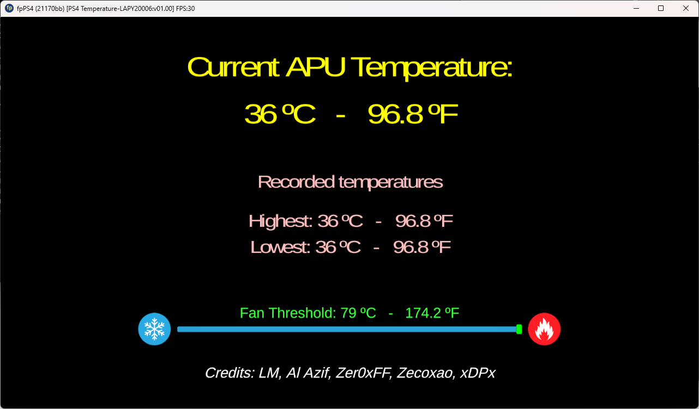
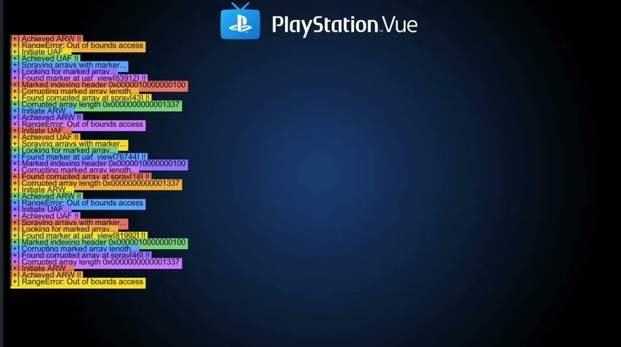
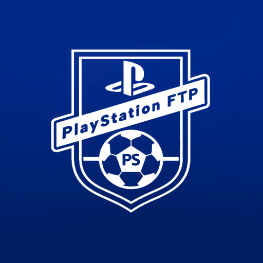
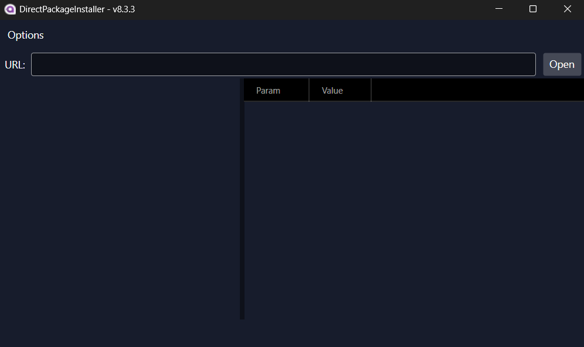

Início
O GoldHEN é uma das ferramentas mais conhecidas dentro do cenário de modificação do PlayStation 4. Ele funciona como um “Homebrew Enabler”, ou seja, um software que permite a execução de aplicações não oficiais e o acesso a funcionalidades que não estão disponíveis no sistema padrão do console.
Seu uso é geralmente associado a estudos sobre segurança, personalização de sistemas e desenvolvimento de softwares alternativos.O GoldHEN é uma das ferramentas mais importantes no cenário de desbloqueio (jailbreak) do PlayStation 4. Em resumo, ele é um tipo de “Homebrew Enabler”, ou seja, um software que libera funções ocultas do sistema e permite funcionalidades extras.
Origem
O GoldHEN foi desenvolvido por um programador conhecido pelo pseudônimo SiSTR0, com o objetivo de aprimorar ferramentas anteriores de liberação do sistema.
Ele surgiu a partir da evolução de métodos de exploração do sistema do PlayStation 4, trazendo melhorias significativas em estabilidade, compatibilidade e recursos disponíveis. Com o tempo, tornou-se uma das soluções mais utilizadas dentro da comunidade de desenvolvimento homebrew.
Imagem - GoldHEN v2.4b17, Coded by SiSTR0

Fonte: Ko-Fi (SiSTR0)
Funcionalidades
O GoldHEN oferece diversas funcionalidades voltadas à ampliação do uso do sistema, entre elas:
- Execução de aplicativos homebrew
- Acesso a funções ocultas do sistema
- Ferramentas de debug e análise
- Suporte a modificações e personalizações
Fonte: autoria própria
Fonte: autoria própria
Métodos
Abaixo está disponível os métodos de jaibreak existentes para o console PS4:
| USERLAND ENTRYPOINT | KERNEL BUG | HOMEBREW ENABLER | VERSÃO DE FIRMWARE |
|---|---|---|---|
| Pendrive
Navegador BD-JB PlayStation Vue Raspberry Luac0re |
BPF RC* (5.05)
IPv6_UaF FreeBSD PPPWN AIO(LAPSE) |
Debug Settings
PS4HEN GoldHEN MIRA |
5.05
6.72 |
Pendrive
Navegador BD-JB PlayStation Vue Raspberry Luac0re |
BPF RC* (5.05)
IPv6_UaF FreeBSD PPPWN AIO(LAPSE) |
Debug Settings
PS4HEN GoldHEN |
7.00
7.01 7.02 |
| Pendrive
Navegador BD-JB PlayStation Vue Raspberry Luac0re |
IPv6_UaF
FreeBSD PPPWN AIO(LAPSE) |
Debug Settings
PS4HEN GoldHEN |
7.50
7.51 7.55 |
| Pendrive
Navegador BD-JB PlayStation Vue Raspberry Luac0re |
FreeBSD
PPPWN AIO(LAPSE) |
Debug Settings
PS4HEN GoldHEN |
8.00
8.01 8.03 8.50 8.52 |
| Pendrive
Navegador BD-JB PlayStation Vue Raspberry Luac0re |
NENHUM BUG DISPONÍVEL |
HEN NÃO DISPONÍVEL |
13.02
13.04 13.50 |
Aplicativos
- HOMEBREW STORE
- APOLLO SAVE TOOL
- ITEMZFLOW
- PS4 XPLORER 2.0
- AVATAR CHANGER
- PS4 TOOLSET
- PS4 CHEATS MANAGER
- PS4 TEMPERATURE
- PLAYSTATION VUE
- REMOTE PKG INSTALLER

Aplicativo que funciona como uma loja alternativa dentro do PS4 desbloqueado. Permite baixar, instalar e atualizar diversos homebrews diretamente pelo console, sem precisar transferir arquivos manualmente por USB ou PC.
Ferramenta voltada para gerenciamento e modificação de saves de jogos. Permite editar progresso, importar e exportar saves, utilizar saves de outros usuários através de reassinatura e aplicar arquivos já completos.

Interface alternativa para gerenciar jogos instalados no PS4. Organiza os jogos em formato de biblioteca com capas e visual mais moderno, além de permitir iniciar jogos e aplicativos de forma mais prática.

Gerenciador de arquivos completo do sistema. Possibilita acessar o armazenamento interno e dispositivos USB, copiar, mover, renomear e excluir arquivos, sendo essencial para manipulação de dados no console.
Aplicativo simples que permite alterar o avatar do perfil do usuário utilizando imagens personalizadas, algo que normalmente não é permitido no sistema padrão.

Conjunto de ferramentas mais avançadas voltadas para modificação e extração de dados do sistema. Muito utilizado para realizar dumps de jogos, acessar funções internas e auxiliar em processos mais técnicos.

Aplicativo para gerenciamento de cheats em jogos offline. Permite baixar códigos prontos e ativá-los durante o jogo, oferecendo vantagens como vida infinita, dinheiro ilimitado e outros recursos.


Ferramenta de monitoramento de temperatura do console. Exibe informações sobre CPU e GPU, ajudando o usuário a acompanhar o aquecimento e evitar possíveis problemas de superaquecimento.

Apesar de originalmente ter sido um serviço de streaming de TV da Sony (hoje descontinuado), no contexto do PS4 desbloqueado ele passou a ser utilizado como um dos pontos de entrada para jailbreak.


Aplicativo que permite instalar arquivos PKG diretamente via rede. O usuário envia o link do arquivo pelo computador ou celular, e o PS4 realiza o download e a instalação sem necessidade de pendrive.